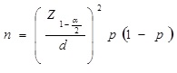

Muestreo Aleatorio Simple Infinito:
Una muestra aleatoria simple puede obtenerse mediante la codificacion de cada uno de los elementos de la poblacion.
Posteriormente, se extraen aleatoriamente los elementos que formaran parte de la muestra,
utilizando medios como la tabla de numeros aleatorios o alguna generacion similar hasta completar la cantidad optima de elementos.
Su utilidad pierde sentido cuando la poblacion es muy grande (Webster, 2000).
Para el caso del muestreo aleatorio simple infinito:

Z: distribucion normal
a= 0.01 (nivel de significacion)
n: tamanno de la muestra
p = 0.5 (proporcion que igual a este valor garantiza el tamanno optimo de muestra)
d = 0.05 (error absoluto)